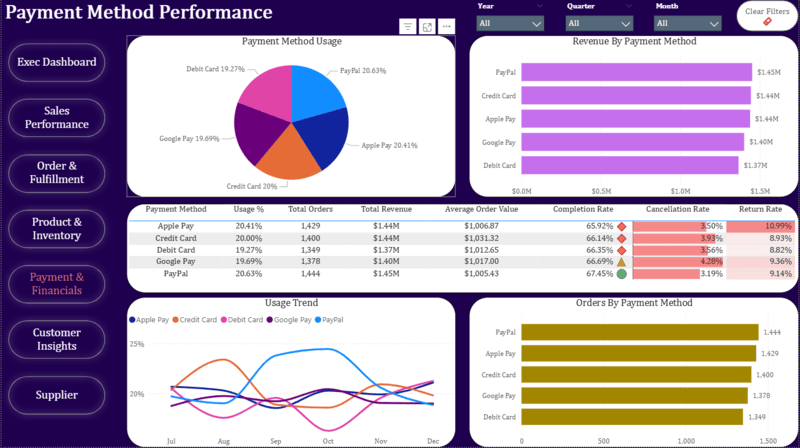

Ecommerce Business Analysis

Executive Summary
I conducted an end-to-end analysis of an ecommerce business generating $7M in revenue across 7,000 orders, examining sales
performance, customer behavior, product mix, and geographic distribution to surface actionable growth insights.
Key findings included a 99.9% purchase conversion rate, Q4 as the strongest revenue period, and top categories led by Audio,
Health, and Electronics. I found that revenue was heavily concentrated in Texas and California, with high-value SKUs driving
a significant share of sales.
Based on my analysis, I developed strategic recommendations around new customer acquisition,
geographic expansion, and concentration risk - shifting the focus from conversion optimization to sustainable growth levers.
Business Performance
• Generated $7M in revenue from 7,000 orders, supported by a strong ~$1K average order value.• Achieved a 99.9% purchase conversion rate, indicating minimal funnel friction and effective demand capture.
• Customer base is fully penetrated: 999 of 1,000 customers have placed at least one order.
Growth Dynamics
• Revenue growth is driven more by order value and product mix than by order volume.• Q4 is the strongest performance period, with December delivering the highest revenue and momentum (+14%).
• Noticeable seasonal softness occurs in February and August, followed by rapid recovery.
Product & Category Mix
• Revenue is led by Audio (17.0%), Health (15.9%), and Electronics (15.2%).• Sales are concentrated in a small number of high-performing SKUs, with the top product generating $250K alone.
• Product mix remains healthy, with no major disconnect between order volume and revenue contribution.
Geographic Concentration
• Revenue is highly concentrated in Texas ($1.62M) and California ($1.23M).• Several states remain underpenetrated, presenting expansion opportunities.
Strategic Implications
• Future growth will require new customer acquisition, geographic expansion, or product portfolio diversification, rather than conversion improvements.• Operational focus should prioritize Q4 readiness, particularly inventory, supplier capacity, and marketing investment.
• High dependence on top SKUs and key states introduces concentration risk, warranting diversification initiatives.
Payment Method Performance
I analyzed customer orders to evaluate the performance of different payment methods based on adoption, revenue contribution, and order outcomes. The analysis reveals which payment options customers prefer, which drive higher spending, and which are more prone to cancellations or returns.
By comparing usage rate and average order value, I identified payment methods that not only attract frequent use but also generate higher revenue per transaction. Additionally, examining cancellation and completion rates helped highlight operational or customer experience risks associated with specific payment options.
These insights can be used to optimize checkout design, prioritize reliable payment providers, and inform promotional strategies aimed at increasing completed transactions and overall revenue.
In Summary...
This analysis evaluates payment methods based on usage rate, average order value, revenue contribution, and order outcomes (completed, cancelled, returned). It highlights which payment options customers prefer, which drive higher spending, and which may introduce operational risk.